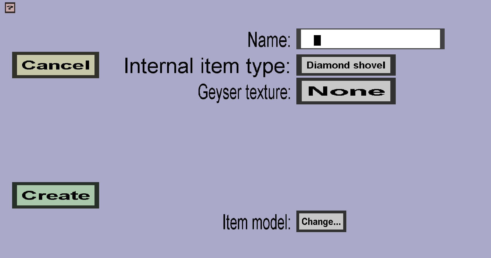

The custom projectile cover edit menu can be used to create or modify custom projectile covers. Custom projectile covers are the hardest to make because you have to do almost everything yourself. If you just started creating a new custom projectile cover, it should look like this:
There should be a 'Cancel' button and a 'Create' or 'Apply' button. There should also be an edit field for the Name and buttons for the Internal item type and Item model.
Every projectile cover needs a unique name. The name will be used as filename in the resourcepack that is eventually generated. It will also be shown in the projectile cover overview in the editor.
(Sphere) projectile covers are 'hidden' custom items that can't be obtained by players, but do have their own item model and item texture, which is why they need an internal item type . Custom projectiles using that projectile cover will be 'followed by' a dropped item with the custom item model and texture, which will cause the custom projectile to look like that 'hidden' custom item. It doesn't really matter what internal item type you use, so I recommend using one that you would not often use for regular custom items (like diamond shovels). That is because there is a limit on the number of custom items and projectile covers that can have the same internal item type.
When you export with a Geyser/Bedrock resourcepack, this texture will be given to the projectile cover. Unfortunately, Geyser doesn't support dropped item models, so it's much more limited than the projectile covers shown to Java edition players.
The item model is the minecraft item model that will be given to the dropped item that will follow the projectile. In a custom projectile cover, writing that item model is entirely up to you. Writing such an item model is probably one of the most complex things to do with this plug-in. If you need an example of a model file, you can create a sphere projectile cover, export the item set and take a look at the generated resourcepack at the path assets/minecraft/models/customprojectiles.